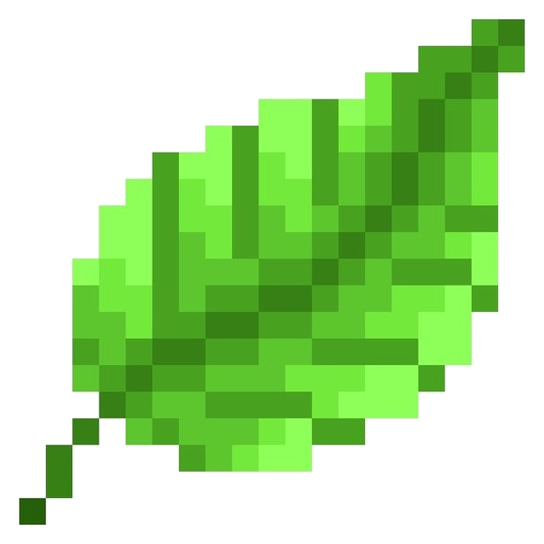

01
Capture
Capture the leaf with your camera or upload an existing photo.
Capture a leaf, upload a photo, and get a simple health check in seconds.
Scan a Leaf →
Use your camera to capture a leaf, or upload a photo from your device.
Your result will appear here after you capture or upload a leaf.
LeafLens brings the camera, plant image, and result together in one simple workflow.
Capture the leaf with your camera or upload an existing photo.
The prototype checks the image and prepares a sample plant-health result.
See the condition and a confidence score for the result.